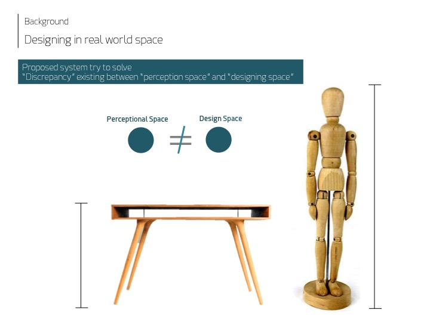
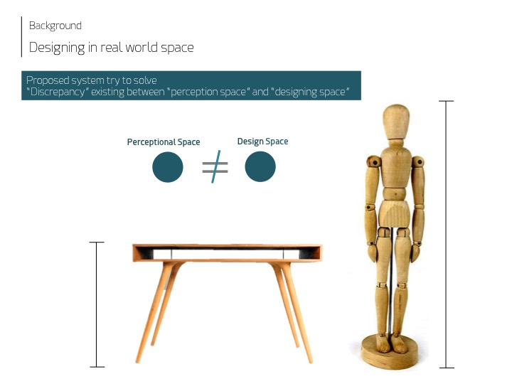
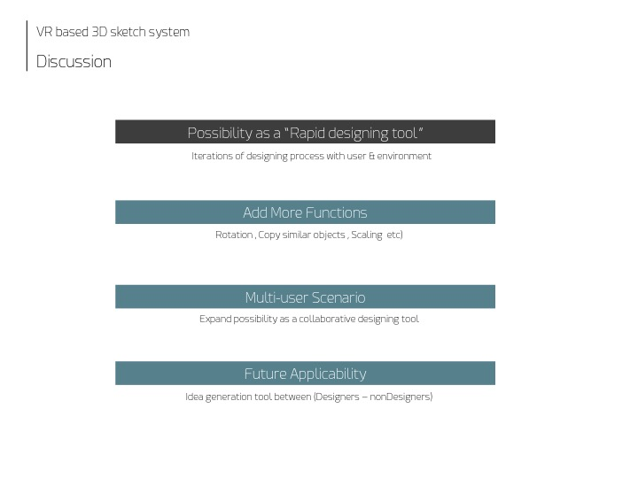
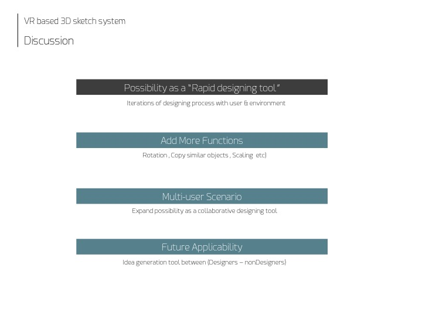

>Interaction Research : 3D furniture sketch in Virtual Reality
- Date:2016
- Category:Augmented Reality, Creative Coding
- Tags:Product Design
Advent of Digital Fabrication age is letting users to design their own products Users are invited to the design process thanks to various machines (3D Printer, CNC Machine etc.) Most of the functions in current 3D Modeling tools are still difficult for novice user to use because it requires users to have special knowledge in 3D structures or terminologies on measurements or modeling.
Problem Finding
Following is the key problem found when designing 3D objects, especially furniture.
The desk in the market or 3D modeling system that I would define as "Design Space" uses mathematical scaling system that is not consistent with user's "Perceptional Space", whereby we perceive products with respect to our body in the living space.
For example, when we recall the optimal desk we want for the office, we tend to think " A desk reaching until my waist" rather than "A desk with the size of 1500mm X 800mm X 600mm".
The system aims to solve such discrepancy existing between "Perceptional Space" and "Design Space".
 

Related works
I classified related works into two categories based on their approach to solve the problem.
 1) 3D Sketch
The eariler concept of 3D skething in the virtual space easier fabrication was introduced from a Swedish design group FRONT. However, the idea was only a future concept without any visual feedback to the designers drawing in the empty space, and images are later generated by motion capture installation around them.
1) 3D Sketch
The eariler concept of 3D skething in the virtual space easier fabrication was introduced from a Swedish design group FRONT. However, the idea was only a future concept without any visual feedback to the designers drawing in the empty space, and images are later generated by motion capture installation around them.
More work is found from Spatial Sketch (2010)
2) Situated Modeling
- Body Avatar, Microsoft Asia (2013)
- Situated Modeling (2012)
System Design
Following figure illustrates the basic structure of our system. The system runs with Unity 3D on the computer and Kinect sensor next to it tracks the body points of the user.
Head Mounted display on user's eyes creates virtual space where user can draw things with a mouse on hand.
Out basic idea was to develop a system where user can Design, Simulate their furniture on the same space.
Workshop Session
To test our very first prototype, I invited 3 students majoring in Industrial design and let them design chairs for 20 minutes with the system. Later, they were invited to the group interview to freely share opinion to improve the system.
Following slides summarizes what have been gone through the sessions and feedbacks from them.
 
